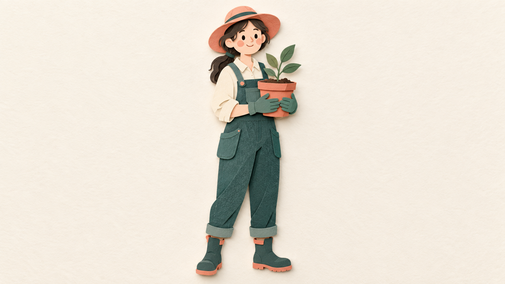
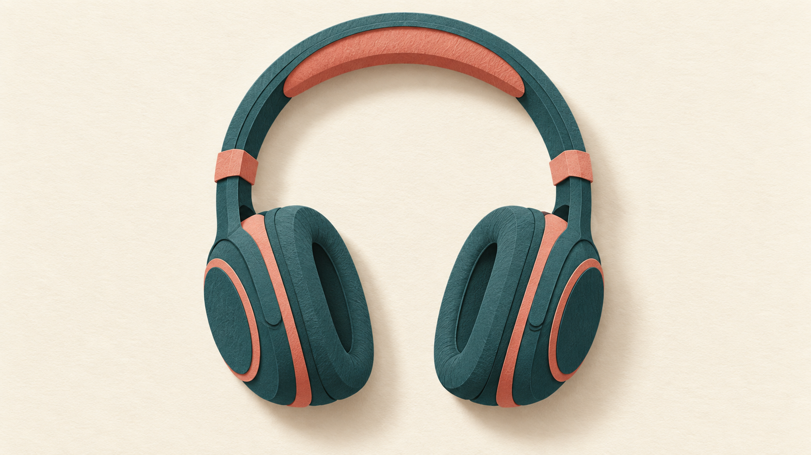

解释天气工具调用

纸纹和主配色延续，但额外出现地图、机器人图标，局部颜色偏离。适合概念说明，不表示实际天气查询或完整工具协议。
生成条件：内置 imagegen，中文提示词原样输入、无参考图、单次生成、16:9、遵循风格配色。历史记录没有精确模型版本或 seed，不承诺逐像素复现。
包含两份历史实测和两份新增单次候选。工具导出提示词，不自动生成图片；样图为 AI 生成候选，不能保证换主题或模型仍然一致。
纸纹和主配色延续，但额外出现地图、机器人图标，局部颜色偏离。适合概念说明，不表示实际天气查询或完整工具协议。
生成条件：内置 imagegen，中文提示词原样输入、无参考图、单次生成、16:9、遵循风格配色。历史记录没有精确模型版本或 seed，不承诺逐像素复现。

递书动作可辨，纸雕层次延续；额外加入柜台和植物，背景限制没有严格遵守。手部交接不是完整人物造型的验证。
生成条件：内置 imagegen，中文提示词原样输入、无参考图、单次生成、16:9、遵循风格配色。历史记录没有精确模型版本或 seed，不承诺逐像素复现。

全身和抱盆动作清楚，纸张层次可见；肤色、棕发和橄榄绿超出限定配色，帽子接近上边缘。
2026-09-11 · 内置 imagegen · CLI 中文提示词原样传入 · 无参考图 · 单次生成 · 16:9。未指定 seed 或精确模型版本；2026-09-11 用户认可当前视觉方向；不代表严格配色或重复生成通过。

单一耳机轮廓清晰，纸张层次与青绿珊瑚配色接近要求；顶部留白较少，体积感较强。
2026-09-11 · 内置 imagegen · CLI 中文提示词原样传入 · 无参考图 · 单次生成 · 16:9。未指定 seed 或精确模型版本；2026-09-11 用户认可当前视觉方向；不代表严格配色或重复生成通过。
如发生偏差，一次只调整一个条件并保留原图；不要把修改后的一次成功描述成通用配方已稳定。
完整人物和独立物品已各补一次候选；当前人物与耳机视觉方向已获用户认可；重复生成与跨模型比较尚未完成。本案例包目前仅支持初步尝试，不作为批量商业配图效果保证。
欢迎记录：实际用途、生成工具与模型、修改次数、最终是否采用，以及之后是否再次使用。不要提交敏感主题或私密图片。